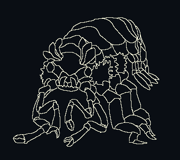

Ganymides is the Solamani word used to describe members of the species of sophont native to Ganymede. In their own language (see below), they are called 1L2L3L1R2R3R.
Ganymides resemble Earth’s Amphipodae or Zurn X’s Branch-7 Moxil-Zurn/X.
Earthling biology uses terminology typically describing decapods to refer to Ganymidean biology.
When full-grown, Ganymides average 1 meter long. They are invertebrates. Their bodies are covered with a translucent, white, semi-rigid membrane similar to chitin in appearance. They do not molt. Their musculature is mostly transparent. They have a centralized nervous system and circulatory system analogous to many creatures on Earth. Their blood contains hemocyanin-like proteins rather than hemoglobin.
They have a pair of compound eyes on small stalks. Behind each of them on top of the cephalothorax is a row of three paddle-shaped lighting organs that each emit a different length of the infrared spectrum.
Their mouthparts consist of two lateral mandibles and a wider bottom mandible.
Their first two sets of limbs end in a pair of clasping claws. These limbs have a greater range of motion than the subsequent 3 sets of pereopods specialized for walking. A bushy frond of gills attaches above each of the pereopods.
Their pleon typically comprises the final third of their body. They have three sets of shorter, flattened pleopods, followed by a similar pair of uropods flanking the telson.
Ganymides reproduce with eggs. Most Ganymides are bidirectionally hermaphroditic. They begin life a certain sex but only develop reproductive capacity when established in a stable social setting, but onset of reproductive capacity varies greatly across individuals. It is at this time that they may change sex from their initial non-reproductive phase. Ganymides return to their non-reproductive stage after reproducing. Some Ganymides use drugs to prolong their reproductive phase or redevelop to their reproductive phase. It is also common for Ganymides to control the sex of their reproductive phase using drugs. Roughly one-third of Ganymides do not develop reproductive capacity and are unable to do so.
Ganymides communicate by flashing their lighting organs in sequence. In Solamani script, it is rendered with the number of the organ followed by laterality. Organs flashed together are grouped with parentheses.
A common greeting in Ganymidean is:
1L2L3L1R2R3R 1L2L3L(1R2R3R) (1L2L3L)3R2R1R
which translates literally to Solamani as: "Ganymide me you".
Ganymides name themselves. Their names tend to match or to describe things or concepts the individual feels drawn to. These names change often. Ganymideans have a second, older naming convention that records placenames, events, and people important to the individual's ancestry. Prior to UPP adoption, Ganymidean governing bodies used these names for record-keeping purposes.
Ganymidean culture tends to value depth of interpersonal connections more than other cultures - it is typical for friends to live together, share finances, and consider each other to be part of their ancestry. A Ganymidean family typically consists of a group of friends, with any biological relationship often non-existent.
Ganymides tend to value mathematics more than other species, especially sequences. In Ganymidean culture, particularly simple and particularly complex sequences are traditionally valued as beautiful.
Aquatic sophonts are rare in The First, and Ganymides often rely on specialized suits called ambulation suits (ambu-suit for short) to navigate interspecies spaces. These suits are often crucial for Ganymides to be able to communicate with other species as Ganymides lack dedicated organs with which to create sound. There is a Ganymidean sign language, but it requires appendages to use and has a reputation of being incredibly complex- its use outside of Ganymidean contexts is rare.
Ganymides often go by a persistent interstellar name of their choosing or by their UPP code.
Compared to Earthlings, Ganymides tend to regard The Second more positively. Traditional Ganymidean culture tends to value The Second's powerful intellect, and tends not to conceive of hosting The Second as a loss of individual autonomy. Their reproductive biology leaves a small chance of symbiotic offspring, and they remain partially integrated into The First.
Artificial Intelligences hold an auspicious spot in Ganymidean society, often occupying roles of high social standing, such as cultural leaders, celebrities, and religious figures.
Ganymidean technology is somewhat unique in The First due to their aquatic habitat. Historical consensus is that the unique combination of the vastly different developmental trajectories of Ganymidean and Earthling technology was the key to the near-vertical progression leap the Solamani Empire made compared to the progress made by the disparate cultures thereto. At point of contact with Earthlings, Ganymides were a pre-interplanetary culture but had vast advances in their understanding of genetics, evolution, and computing. Metallurgy was rare and expensive on pre-Solamani Ganymede and most things were produced from ceramics and engineered textiles.
Notable systems with high Ganymide populations are Sol, α Centauri, Anubis, DX Cancri, Phyllis 12, Ran, Czernobog, & Kishar.
When rolling characteristics, roll for strength with a bane and for education with a boon.
Attacks to hit you have DM -2 due to your size, modified by the additional size of any ambu-suit.
Some common models of ambusuit are:
| Type | Protection | TL | RAD | KG | Cost | Required skill | Modifiers |
| Ambusuit | +4 | 8 | 15 | 28 | Cr15000 | Vacc Suit 1 | Size +0 |
| +8 | 10 | 60 | 12 | Cr12000 | Vacc Suit 0 | Size +0 | |
| +10 | 12 | 90 | 8 | Cr24000 | Vacc Suit 0 | Size +0 | |
| Androsuit | +10 | 12 | 90 | 12 | Cr39000 | Vacc Suit 1 | Size +2, Str = 9 |
| Heavy Duty Suit | +22 | 14 | 290 | 450 | Cr300000 | Vacc Suit 2 | Size +5, Str = 25 |

A crude drawing of a Ganymide.